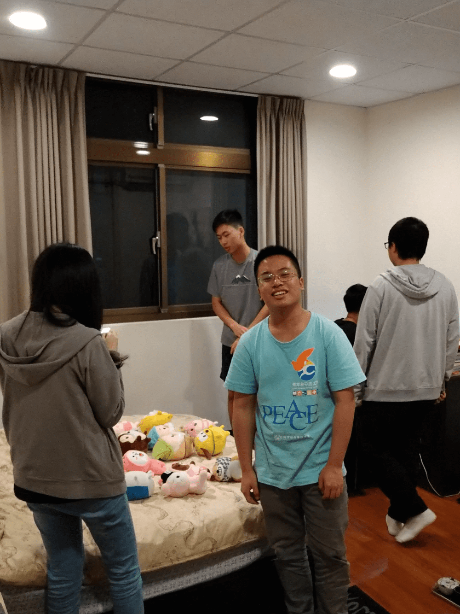

Experience
我的經歷
我覺得我啊~其實對於設計一直都沒有什麼興趣也不大擅長
我比較擅長會計、文書軟體等等書面作業，對金融與科技也很有興趣
但比起我網頁製作我更愛的是寫網頁的後端(相比較)
我一直在思考，其實學了網頁前端設計這門課讓我更理解我應該要做什麼事情
其實光是這個自我介紹就花了我很多的心力了~但是我也知道要不足這個部分
高中職時期就讀中壢高商資料處理科，相對來說進入資管系是一個比較平滑的選擇
高中時期，我們學的程式語言是VB，相對簡易，但是也讓我在大學學習其他語言時學習的很順暢
當時我其實就知道我沒有什麼美術天分，做出來的東西都沒怎麼設計感，所以我能做的就是整整齊齊
希望我在未來能夠逐漸有進步。
Education
Club Activity
社團活動
高中時期我有參加辯論社
但是大學就沒有參加任何社團
興趣是研究3C產品
金融知識、法律等等
University
大學目標
1.學分全部pass
2.順利畢業
3.安穩的生活
未來的目標是考公務員
Life Record
高雄捷運 美麗島站 With 奈奈
中原大學 5KM 路跑
小組討論 夜間隨手拍
一年級 畢業家聚
宜蘭遊 我忘記名字了的橋
不服就操我阿